How to use One Day
One Day is a calm to-do list that shows one day at a time. There’s no account and nothing to set up: your tasks stay in your browser, on your device. This guide covers everything it does, in plain words. Read it from top to bottom, or jump to what you need.
Basics
The day on screen, adding tasks and ticking them off: all you need from the first minute.
Getting started
Open day.bemorin.com in a current browser, on a computer or a phone. It opens on today: a big date, a line that says how far along the day is, and a field to add tasks.
Write what today is for in Add a task and press Enter. Tick each task as you finish it: the thick rule at the top fills as the day gets done, in red on today.
That’s all there is to it. The rest of this page is for the days when you want a little more.
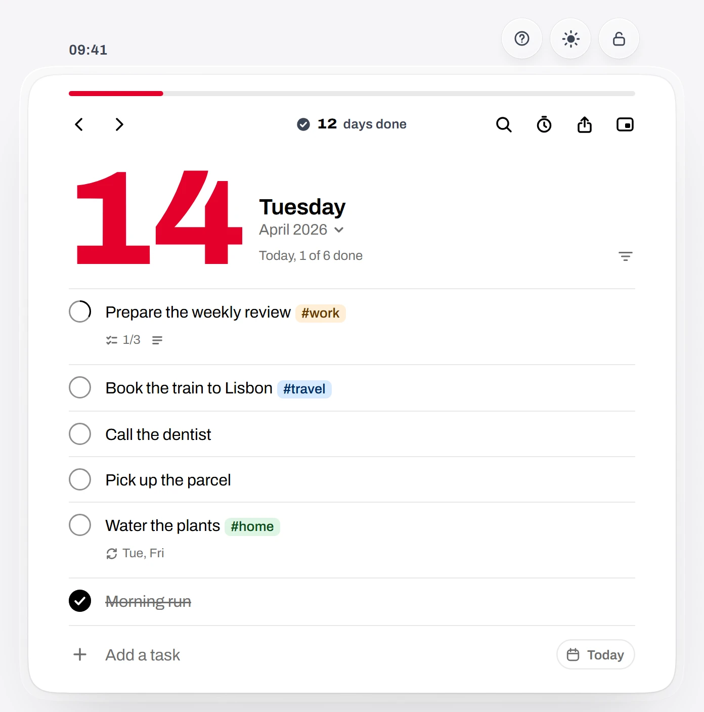
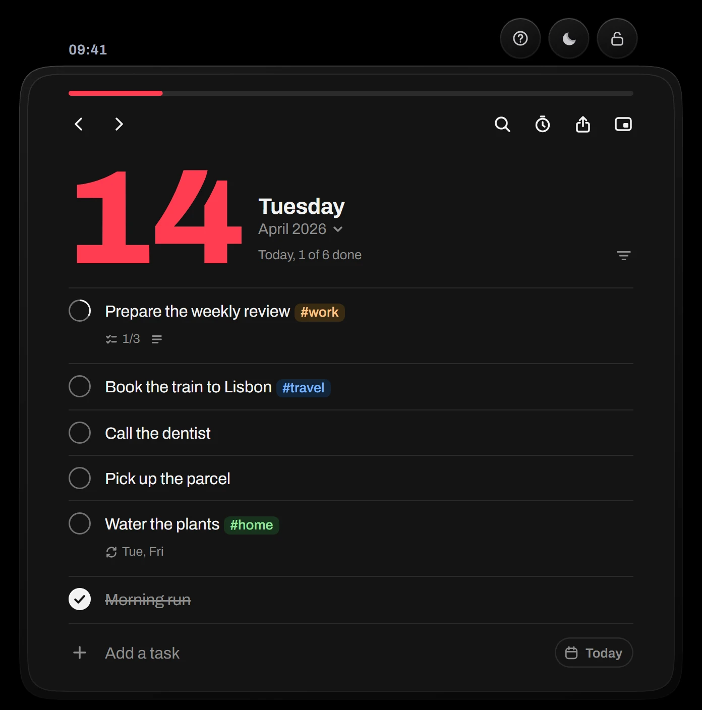
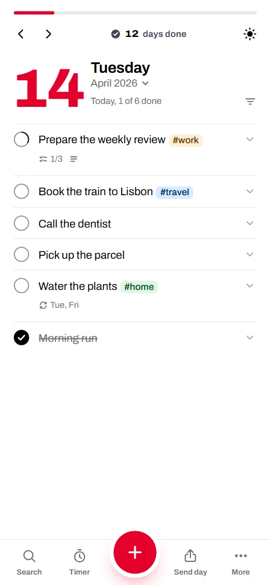
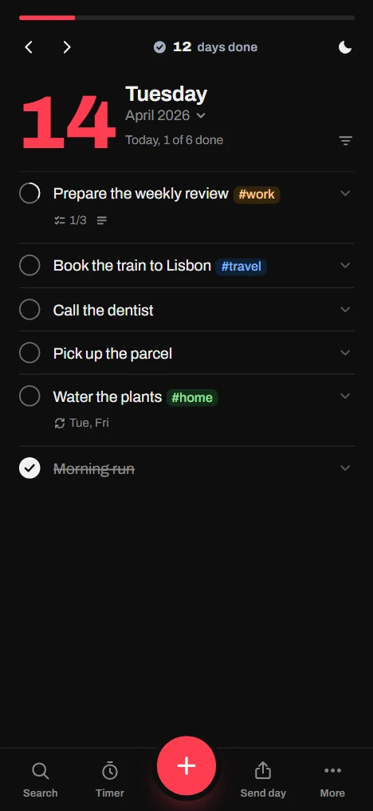
To come back to this guide, click the ? at the top right, above the day, on a computer; on a phone, it’s How to use One Day in More.
Your day
One Day shows one day at a time, like a desk calendar you tear a sheet off. To go to another day:
- click the arrows at the top left, or press ← and →;
- turn the mouse wheel: down for the next day, up for the one before (on a trackpad, swipe sideways);
- on a phone, swipe sideways;
- click the month under the weekday to pick any day in a calendar. A dot under a day means it still has tasks to do.
On any other day, Today appears beside the arrows; it, or D, brings you back.
Under the weekday, a short line says which day it is next to today (“Tomorrow”, “3 days ago”) and how much of it is done. The rule at the top fills as you tick tasks off.
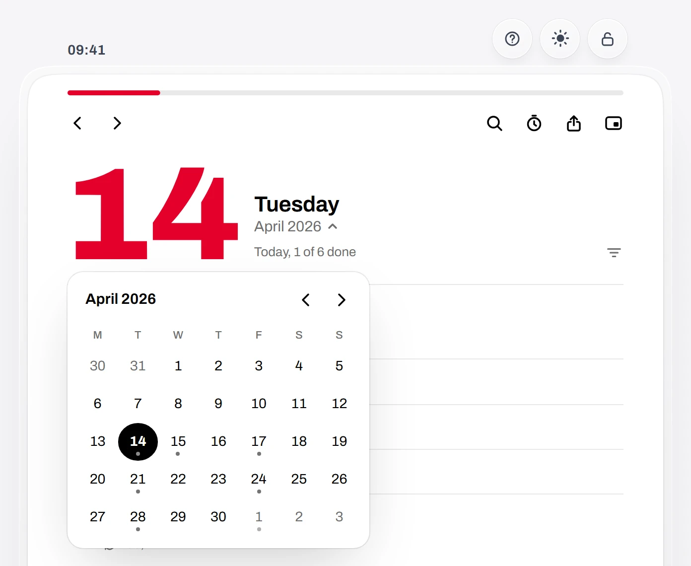
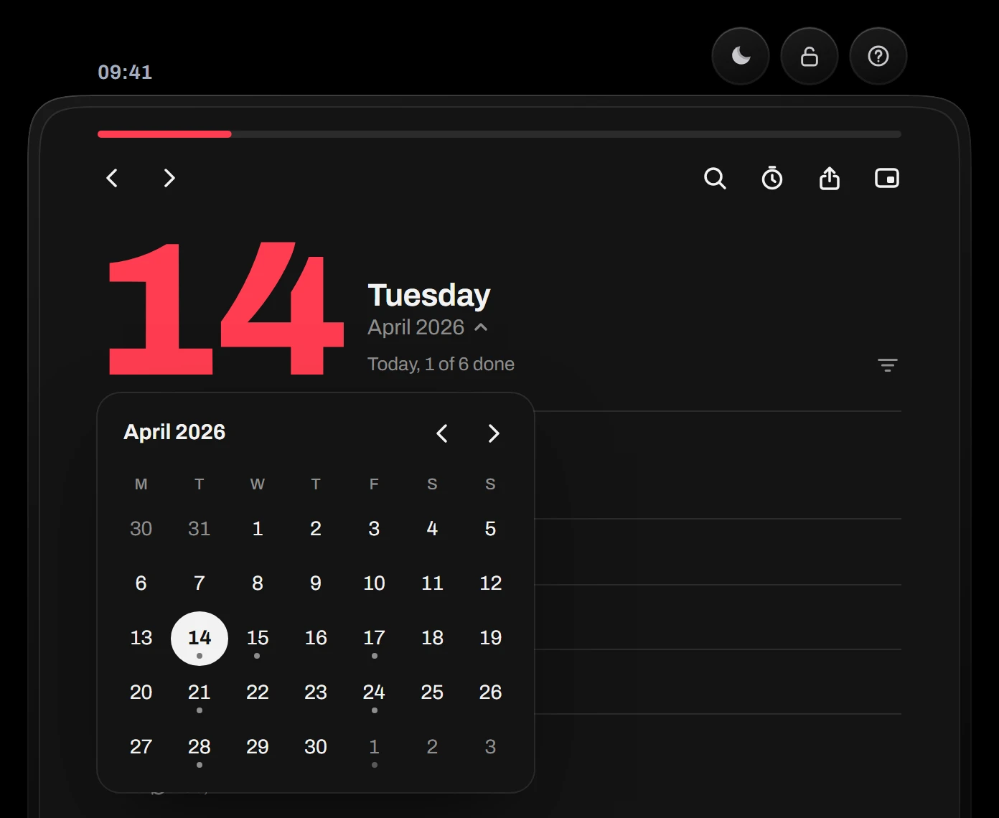
Leftovers
Unfinished tasks stay on their day: they don’t move by themselves. When earlier days still have some, today says how many are left, and Bring here moves them all to today in one click. Repeating tasks are left out, so a missed repeat never piles up.
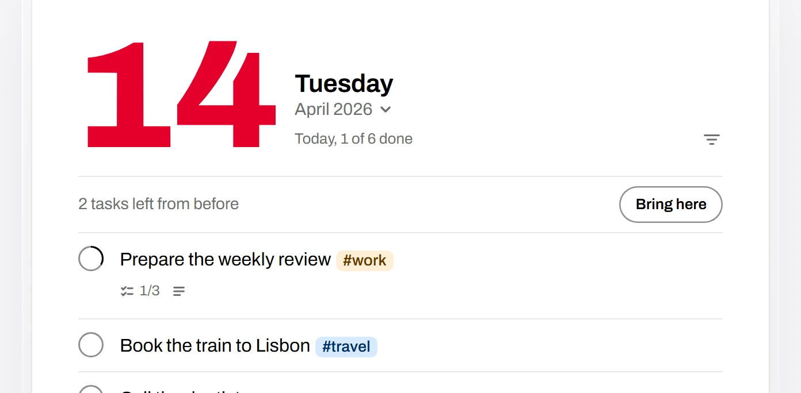
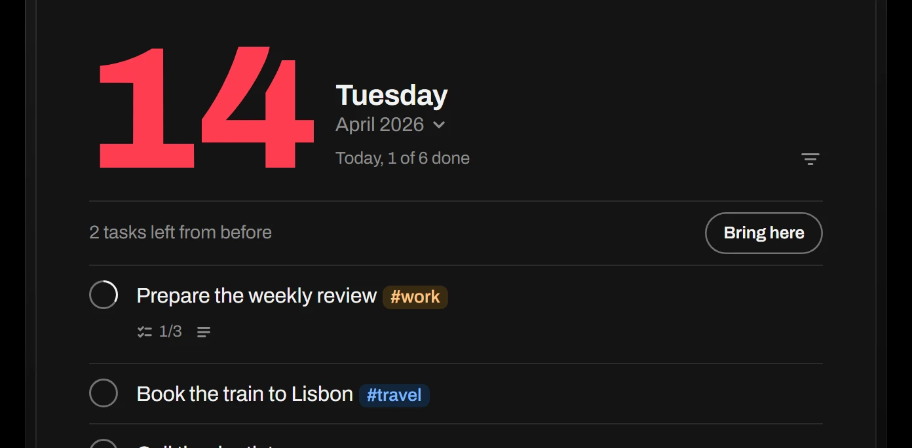
Full days
When every task of a day is ticked, the day is full. Tick the last one and its circle rises into a big check over the day, with the count under it going up by one; then it all folds into the middle of the bar, where One Day keeps the full days, today and before. A day you miss takes nothing away: the count never starts again. Untick a task, or undo, and the day leaves the count.
A day gone by whose unfinished tasks you carried on, with Bring here or a task’s arrow, isn’t full: what it left undone went elsewhere. Putting a task off on its own day, even in the evening, is up to you, and the day can still be full. Moving tasks between days still to come is only planning, and deleting a task you no longer need doesn’t count against a day.
In a narrower window, where the time sits in the bar, the count takes its place for five seconds when One Day opens, every ten minutes, and when it counts one more. If your device asks for less motion, the check and the count just show for a moment, without moving.
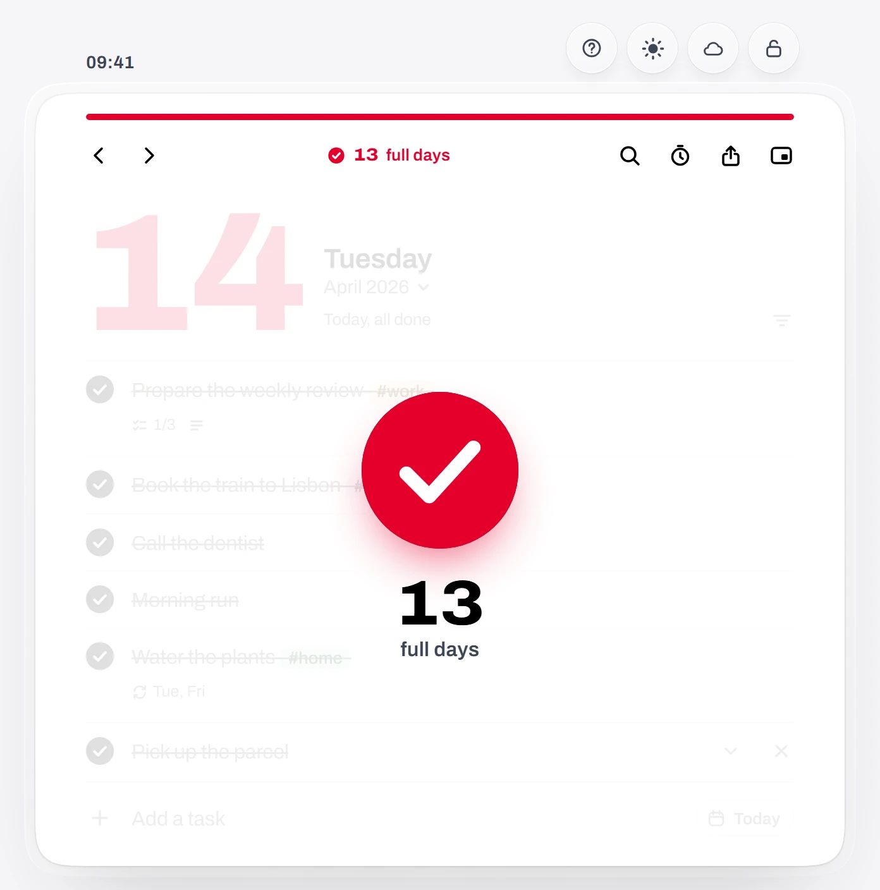
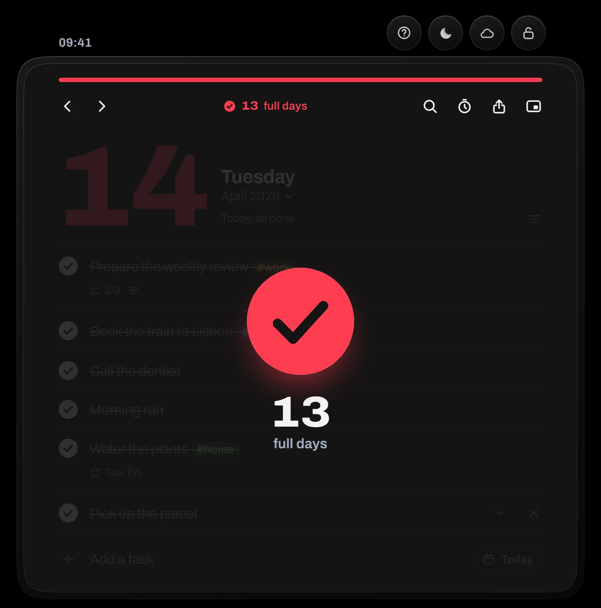
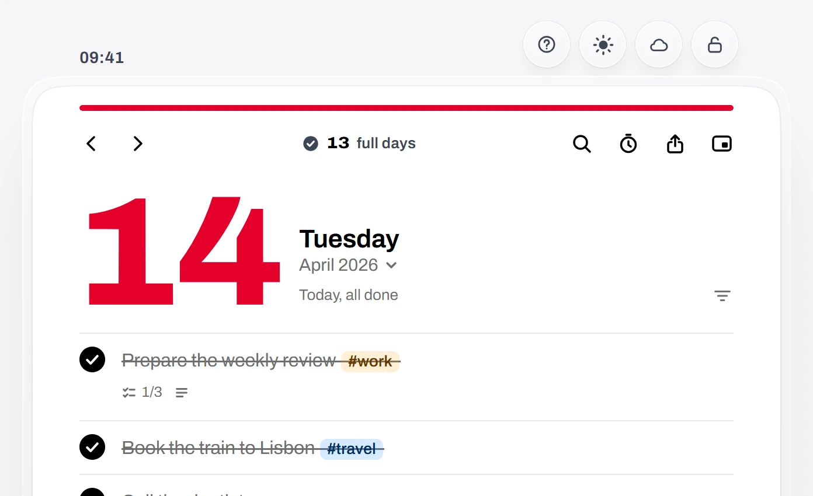
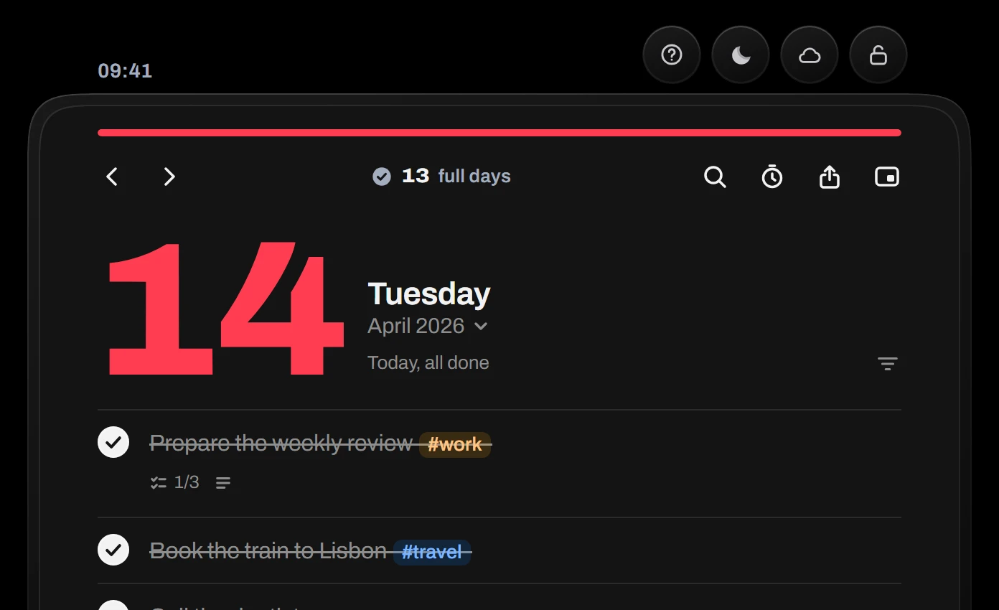
Adding tasks
Click Add a task at the bottom of the day, or press N, type, then press Enter. On a phone, the red + in the bottom bar opens the field as a sheet, just above the keyboard.
The new task goes to the day on screen. The chip at the end of the field names that day: click it to send the task somewhere else without leaving the day you’re on, to Today, Tomorrow, Next week or any date. From the field, Tab reaches the chip.
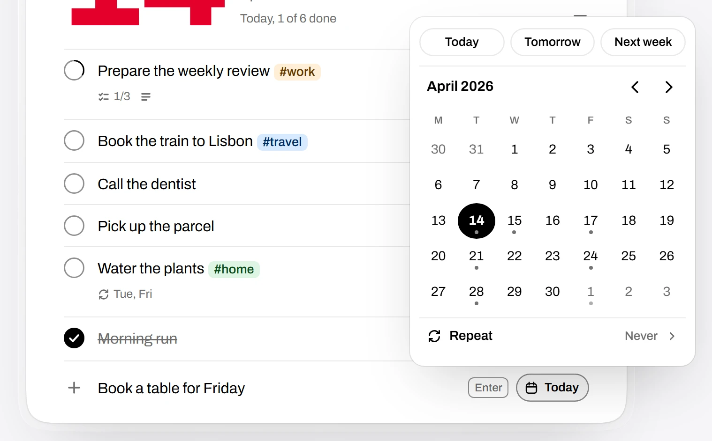
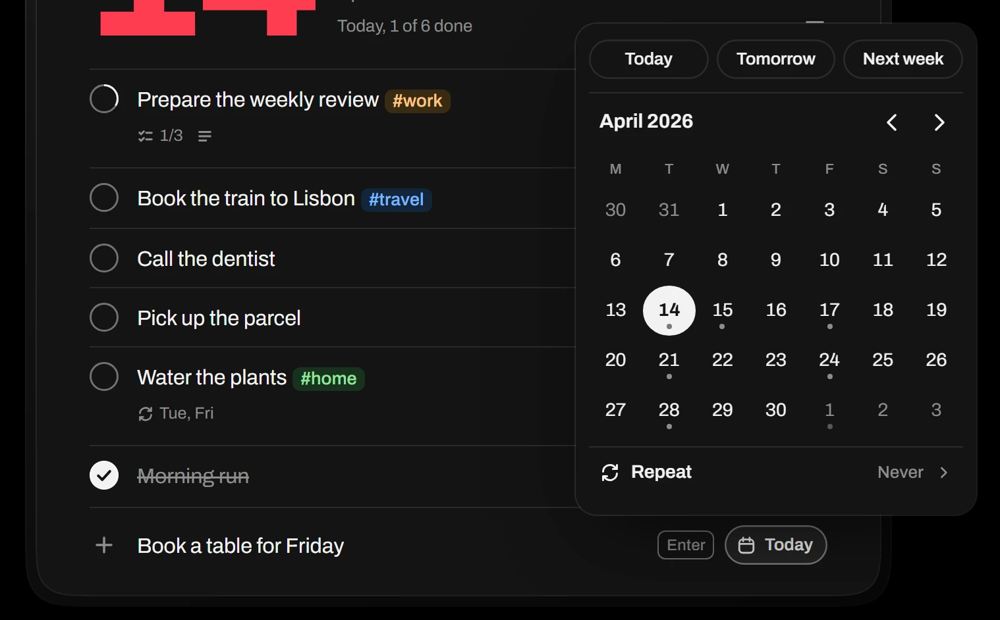
Paste a list
Paste several lines into the field and each line becomes a task. Bullets, numbers and checkboxes are left
out, as notes, Markdown, Notion and other to-do apps write them, and items already ticked (- [x],
☑, ✅) come in done. A line set further in than the one above it becomes its sub-task.
Pasted into a task’s sub-task field, each line becomes a sub-task. Either way, one undo takes the whole list back.
Working with tasks
- Tick a task with its circle. Done tasks go to the bottom of the day.
- Reorder by dragging a task up or down. On a phone, hold it a moment, then drag. With the keyboard: Alt + ↑ or ↓.
- Move it to the next day with the arrow that appears when you point at it.
- Delete it with the cross beside that arrow.
- Rename it: double-click it, or click the title of an open task.
On a phone, tap a task to open it: its arrow and its cross then appear on its row.
Undo
Everything can be undone. After a change such as deleting or moving a task, a message at the bottom of the screen offers Undo. Ctrl Z (⌘ Z on a Mac) goes back up to 80 steps, for as long as One Day stays open, and Ctrl Y or ⌘ ⇧ Z redoes. Without keys, on a phone, More keeps Undo and Redo at its top while there is something to take back, each saying what it would do.
Organising
Notes, checklists, repeats and tags for fuller days, and search to find anything again.
Notes and sub-tasks
Click a task, anywhere but its circle, to open it. An open task holds:
-
a note, for anything longer than a title. Select text to format it, use the usual shortcuts
(Ctrl or ⌘ with B for bold, I italic, E code,
K a link), or type Markdown as you go:
**bold**,*italic*,`code`,~~strike~~, and-then a space to start a list; - sub-tasks, a checklist of smaller steps. As you tick them, the task’s circle fills, and the count under its title keeps track;
- Repeat and Send, for this task alone: see Repeating tasks and Sending tasks.
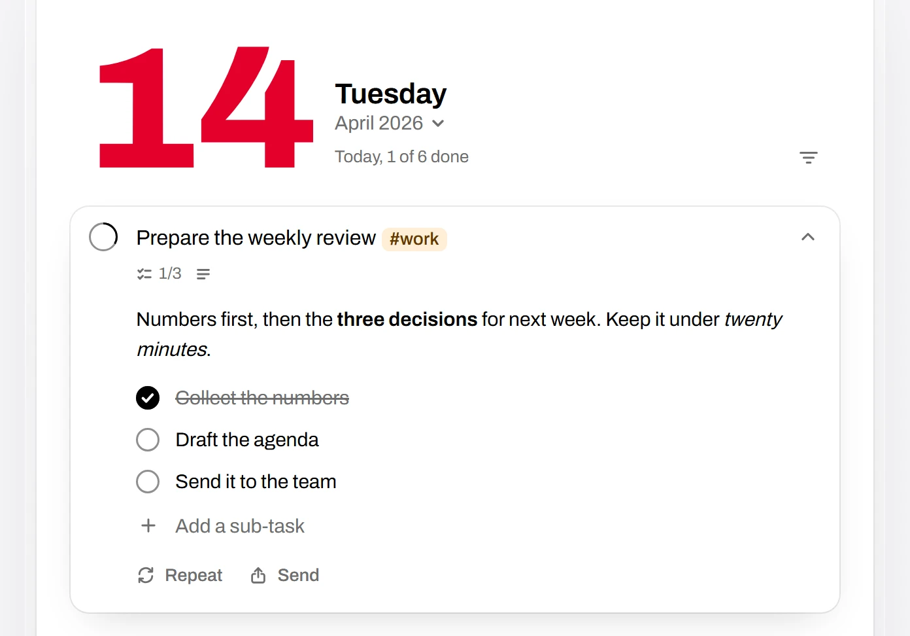
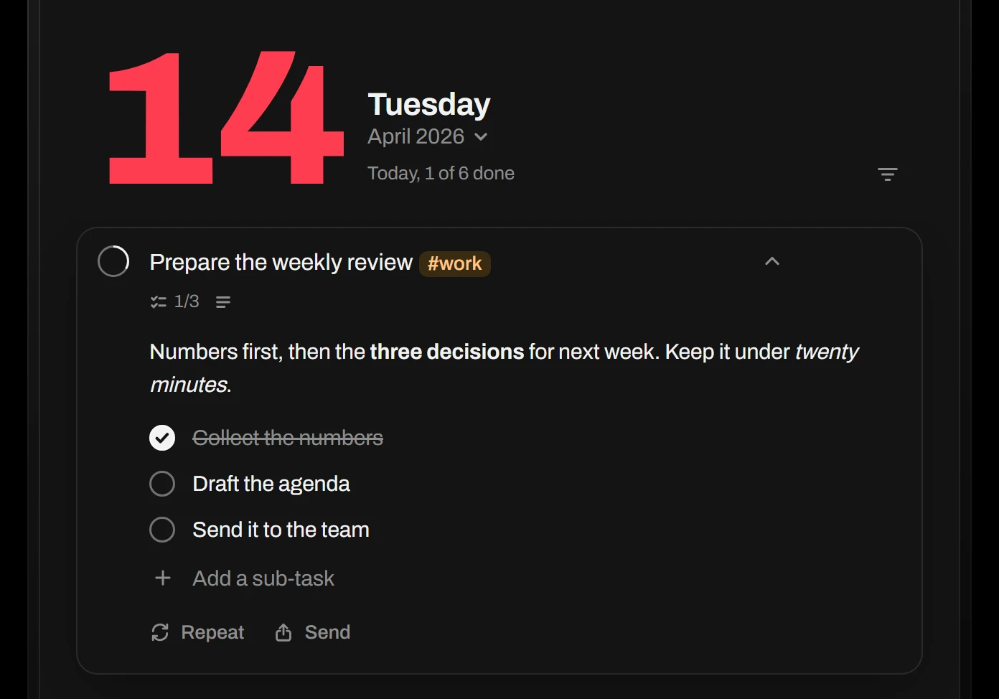
Repeating tasks
For what comes back, open the day chip of a new task, then Repeat. An existing task has Repeat in its card. A task can come back:
- every day, week or month, or every few of them (up to 99);
- weekly, on the weekdays you pick;
- monthly, on a date (the 14th) or on a weekday (the second Tuesday, the last Friday).
Each occurrence appears when its day comes. Ticking, moving or deleting one leaves the others alone, and missed ones don’t pile up as leftovers. Under a repeating task, a small line says when it comes back. To end a repeat, open the task, then Repeat and Stop repeating.
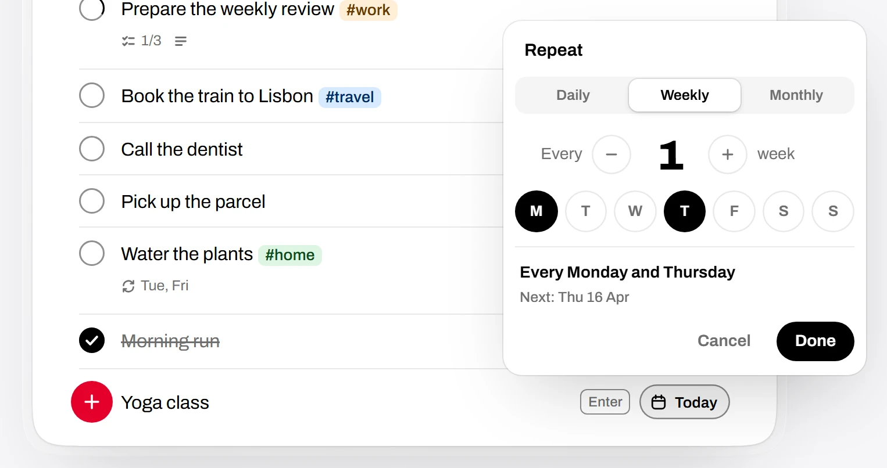
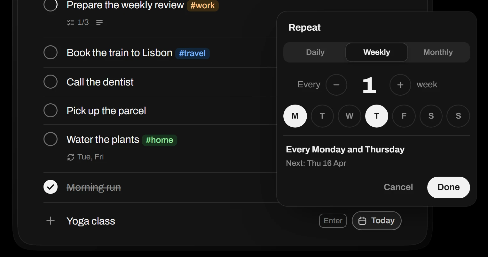
Search
Search (/, or Ctrl K) looks through every day at once: titles, notes and
sub-tasks. It ignores capitals and accents, so cafe finds Café. Start with # to
search by tag.
Pick a result, with a click or with ↑ ↓ and Enter, to go to its day, where the task lights up. On a phone, search opens as a drawer over the day: drag it down to close it.
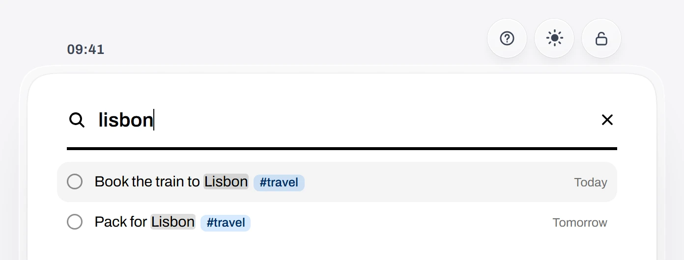
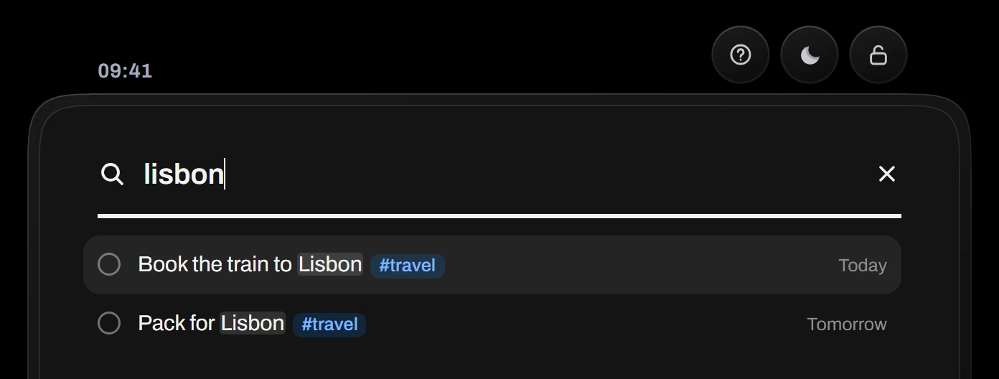
Before you type anything, search lists your tags, then the buttons for backups, and for changing the lock once it’s on.
Tools
A timer, tasks sent as links, a window that stays on top, and a key for nearly everything.
Timer
The timer (T) counts down 5, 15, 25 or 45 minutes, or any time from 1 minute to 3 hours with − and +. It comes in two moods:
- Calm shows whole minutes, with a thin line that fills each minute;
- Live rolls the minutes and seconds, like the date.
While it runs, the time left shows in the bar, and Pause, +1 min and Stop are a click away. When time’s up, One Day plays a soft chime. The timer keeps time even if you close One Day: open it again to see what’s left.
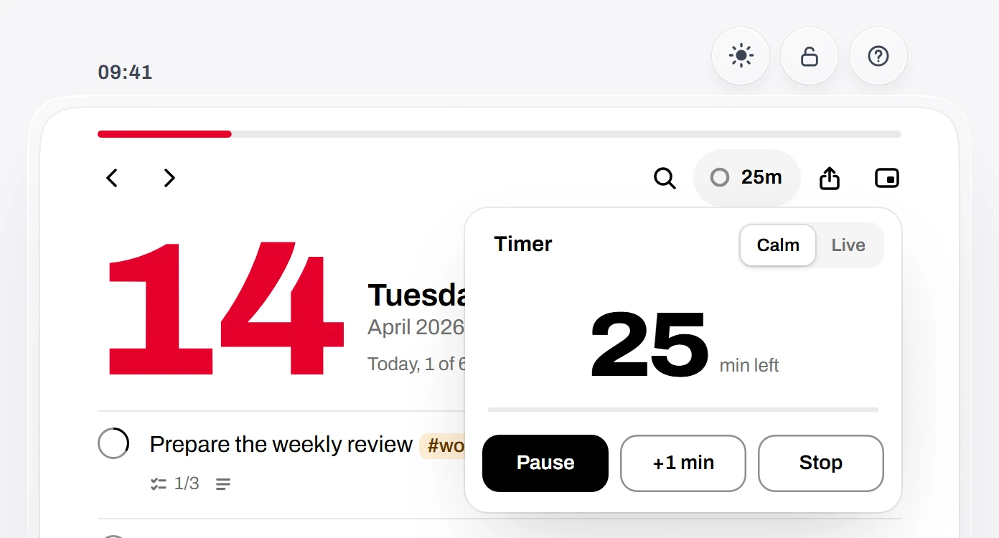
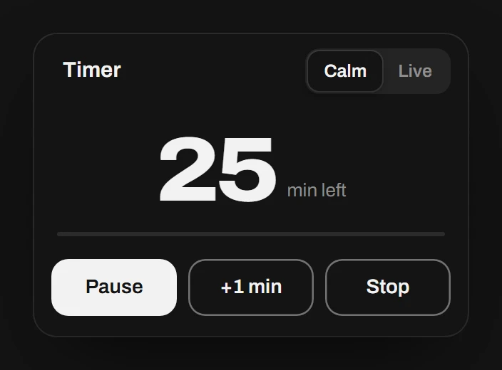
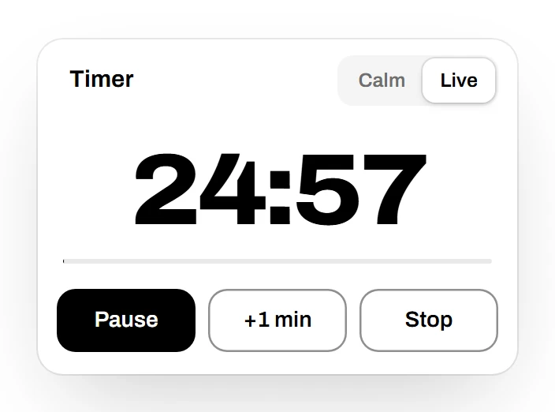
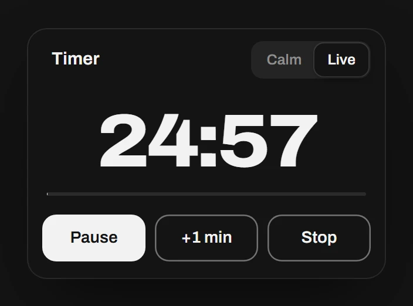
Sending tasks
A task can travel as a link: to someone else, or to yourself on another device.
- Send, in an open task, sends that task with its note and sub-tasks.
- Send this day, the arrow out of a box at the top (Send day on a phone), sends all of the day’s unfinished tasks at once.
On a phone, this opens the share sheet. On a computer, the link is copied: paste it in a message, an email or a note. Whoever opens it sees what it holds and picks the day to add it to, or ignores it. They need no account and no app, just a browser.
The tasks travel inside the link itself, after the #. Browsers never send that part to a server,
so nothing is stored on the way. Anyone who has the link can read them, as with any message.
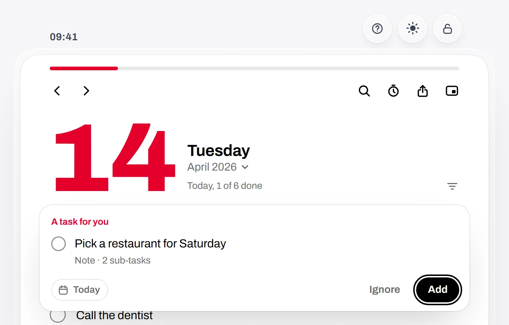
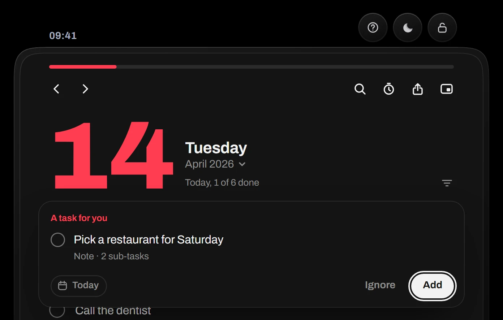
With an AI assistant
Claude, ChatGPT or another assistant can add tasks for you. Ask in your own words, for example “Add to One Day: buy bread tomorrow, call the bank about the loan, and water the plants every Tuesday and Friday”. The assistant answers with a link. Open it, and One Day shows the tasks, each with its note, sub-tasks, day and repeat, and a ticked box: untick the ones you don’t want. Add all puts them in, with one undo; Ignore drops them all.
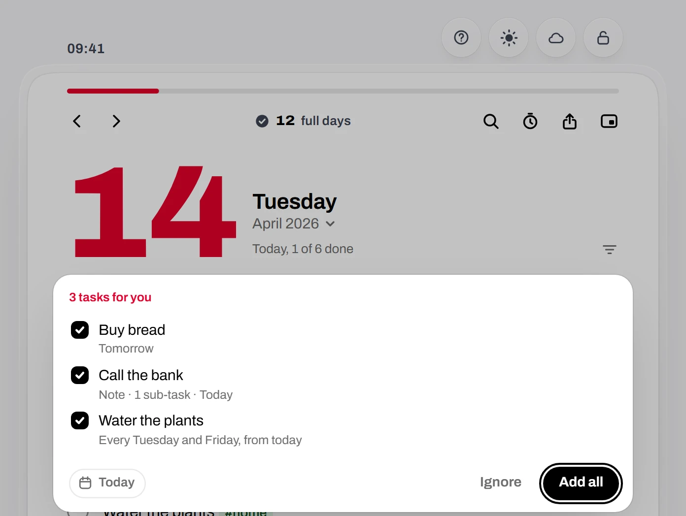
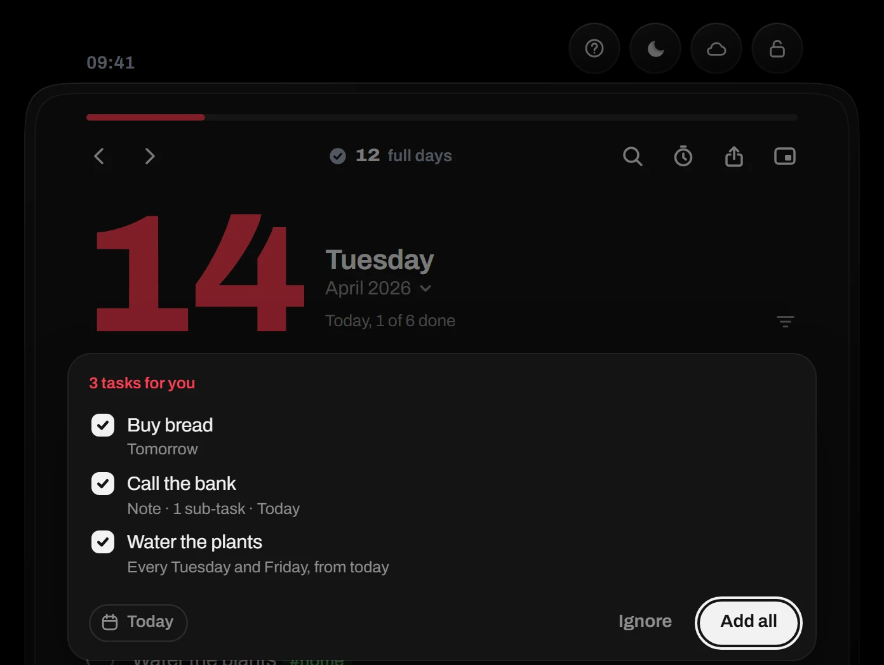
Setting it up takes a minute:
-
Claude Desktop:
download the One Day extension
(
one-day.mcpb) and drag it onto Settings → Desktop app → Extensions (Manage). It runs on your computer and goes nowhere online. - Claude Code: add the same small server, as its page shows.
- ChatGPT, claude.ai and other assistants: copy the paragraph below and paste it where the assistant keeps instructions. In ChatGPT: the custom instructions in Settings → Personalization, a project’s instructions or a custom GPT’s. In claude.ai: a project’s instructions or your profile preferences.
When I ask to add tasks to One Day, answer with one link holding them all, shown as a Markdown link "Add to One Day". Build it as https://day.bemorin.com/#add? followed by name=value pairs joined by &: task= the task (#word makes a tag). Each task= starts a new task; the pairs after it describe that task. note= details (plain text; **bold**, - lists and links work) sub= one sub-task; repeat it for more day= today, tomorrow, monday…sunday (the next one) or YYYY-MM-DD. Leave it out and I choose. repeat= daily, weekdays, weekends, weekly, monthly, yearly, or an RRULE such as FREQ=WEEKLY;BYDAY=MO,TH or FREQ=MONTHLY;BYDAY=-1FR. It counts from the task's day. Encode values as in a URL query: a space is +, and write %2B for +, %26 for &, %23 for #, %25 for %, %28 and %29 for ( ), %0A for a new line. Accented letters can stay as they are. Example: https://day.bemorin.com/#add?task=Buy+bread&day=tomorrow&task=Call+the+bank¬e=About+the+loan&sub=Find+the+number&task=Water+the+plants&repeat=FREQ=WEEKLY;BYDAY=TU,FR Nothing is sent anywhere: the tasks stay in the link until I open it and confirm.
Then ask, in any language: “Add to One Day: buy bread tomorrow, and water the plants every Tuesday and Friday.” Adding tasks with a link has every detail of the link, and the same instructions as a skill, for assistants that take skills.
The tasks travel in the link, as when you send one: no One Day server is involved. Your assistant’s provider sees what you ask it, as with anything you tell it.
Keep on top
In Chrome and Edge on a computer, Keep on top (P) pops One Day out into a small window that floats above all your other windows: handy while you work in something else. Close that window, or click Bring it back in the tab, to return. Make the window narrow and its bar keeps the timer: search, sending the day and the theme wait behind More (⋮). Safari and Firefox can’t do this yet, so the button only shows where it works.
Keyboard shortcuts
On a computer, nearly everything has a key. On a Mac, use ⌘ where it says Ctrl.
| Action | Keys |
|---|---|
| Previous or next day | ← →, or Alt + ← → while typing |
| Back to today | D or Home |
| New task | N, then Tab to the day chip |
| Search | / or Ctrl K |
| Filter by tag | F |
| Timer | T |
| Keep on top | P |
| Lock now, with the lock on | L |
| Undo | Ctrl Z |
| Redo | Ctrl Y or Ctrl ⇧ Z |
| Close what is open | Esc |
| Action | Keys |
|---|---|
| Move between tasks | ↑ ↓ |
| Reorder the task | Alt + ↑ ↓ |
| Rename it | Enter, then Tab to go on to its note |
| Delete it | Delete or Backspace |
| Action | Keys |
|---|---|
| Bold, italic | Ctrl B, Ctrl I |
| Code, link | Ctrl E, Ctrl K |
| Strikethrough | Ctrl ⇧ S |
| List | - then a space, at the start of a line |
Your devices
One Day on a phone, installed as an app, in light or in dark.
On a phone
On a phone, One Day fills the screen and keeps everything within reach of your thumb, in a bar at the bottom:
- Search opens as a drawer over the day;
- Timer opens as a sheet, and the bar shows the time left while it runs;
- the red + opens the field to add a task, just above the keyboard;
- Send day sends the day’s unfinished tasks;
- More holds installing, sync, backups, the lock and the links.
Swipe sideways to change day. Tap a task to open it; hold it, then drag, to reorder it. A sheet or the drawer closes when you drag it down. On Android, the back button closes what is open first (a sheet, the drawer, an open task) before it leaves One Day.
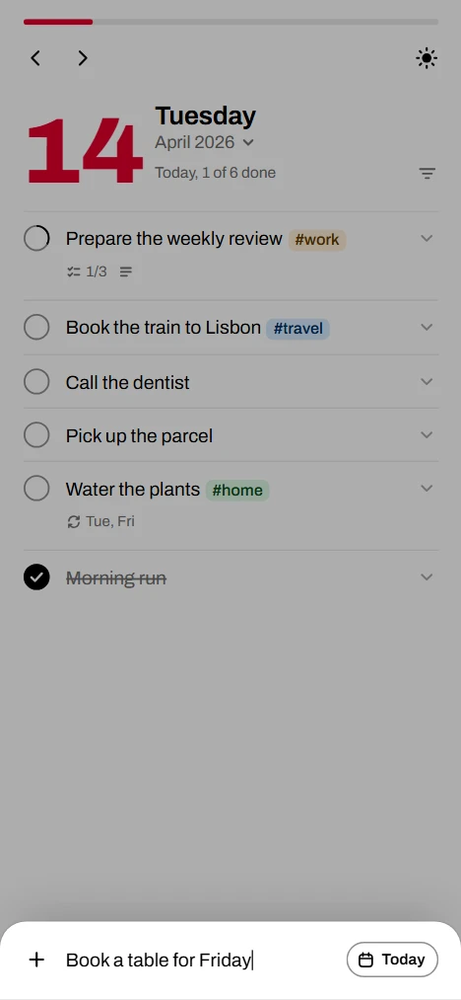
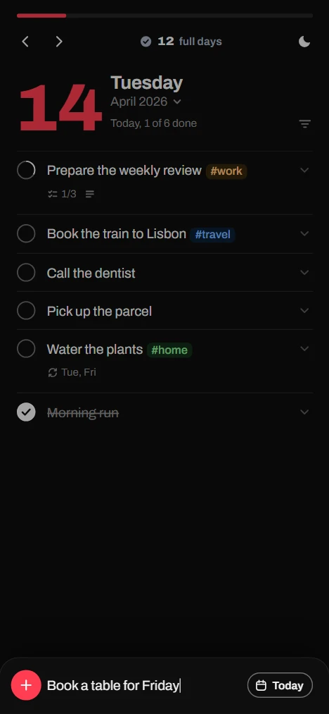
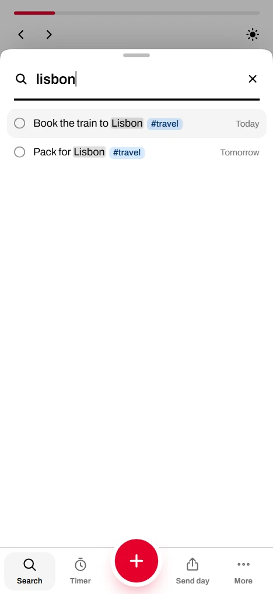
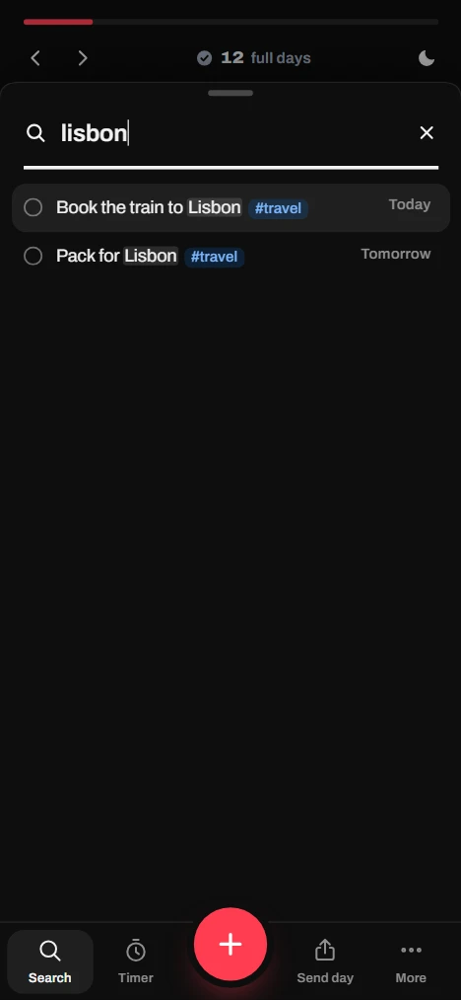
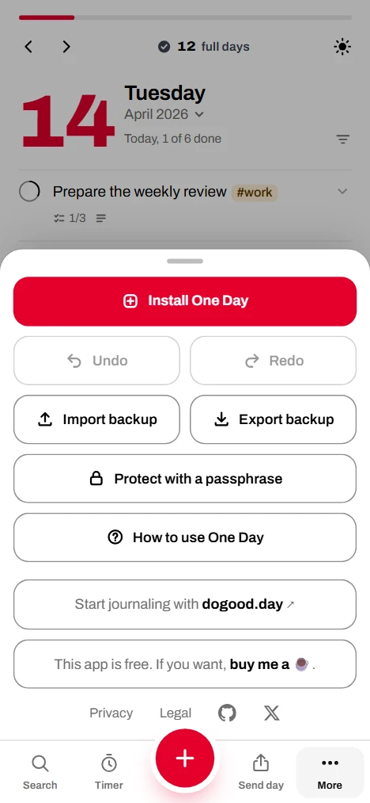
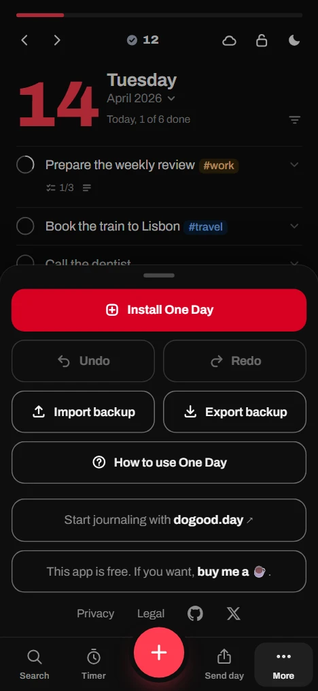
Install it
One Day works in any browser tab. Installed, it gets its own icon and window, opens without a connection, and the browser holds on to its data. That matters most in Safari, which can erase the data of a site you haven’t opened for a week, but not of an installed app.
Until it’s installed, One Day offers it: at the top of the page on a large screen, behind the ⋮ button in a narrower window, and first in More on a phone. In Chrome and Edge, the offer opens the browser’s own install prompt; in Safari, it tells you where to look. You can also install it yourself:
- Chrome or Edge on a computer: click the install icon at the right of the address bar.
- Safari on a Mac: in the menu bar, File, then Add to Dock.
- iPhone and iPad: tap Share, then Add to Home Screen.
- Android: in Chrome’s menu (⋮), Add to Home screen or Install app.
- Firefox on a computer: keep One Day in a tab. It works the same, offline included.
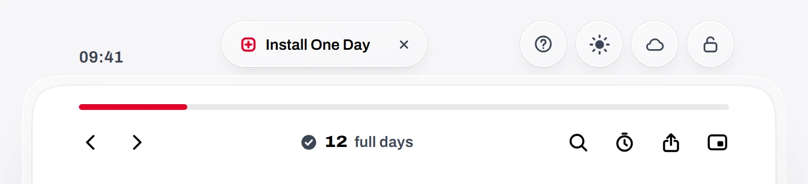
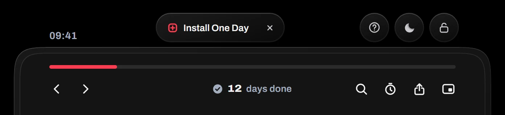
New versions arrive by themselves: One Day fetches them in the background and switches the next time it opens. If an installed copy seems stuck, see the installed app shows an old version.
Light and dark
One Day follows your device’s light or dark appearance. The sun or the moon at the top right switches it in one click, and the choice is kept. To follow the device again, switch back to whatever it uses. This guide follows the same choice.
Your data
Where your tasks live, how to keep a copy, and how to lock them.
Privacy
Your tasks stay on your device. One Day keeps them in your browser’s storage for this site. There is no server, database or account behind it, so nobody else can see them, not even its maker. If you sync them with your own cloud, they also go there, encrypted with your passphrase before they leave: your cloud can’t read them, and nothing ever reaches One Day.
- No cookies, no analytics, no third-party requests. The font comes with the app, and the site’s security policy lets nothing else load. This guide makes the same promise.
- The links are plain links. Nothing is contacted until you click one. The dogood.day link tells that site you came from One Day; the others send nothing.
- It works offline once you’ve opened it online one time. The browser keeps a copy of the app’s own files, never of your tasks.
- What the browser keeps for One Day: your tasks, the timer’s settings, your light or dark choice and, if you put off the install offer, that you did. With sync on, also its key and your sign-in to your cloud.
The other side of the coin: your tasks live in this browser, on this device. Another browser, another device or a private window has its own separate list, and clearing the site’s data erases them. That’s what sync and backups are for.
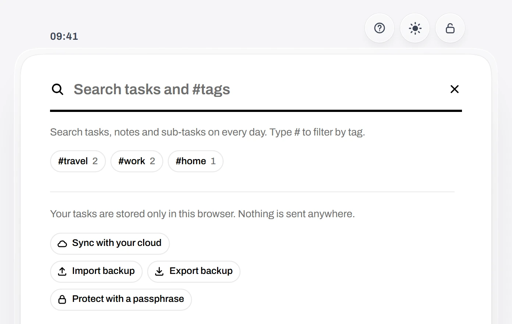
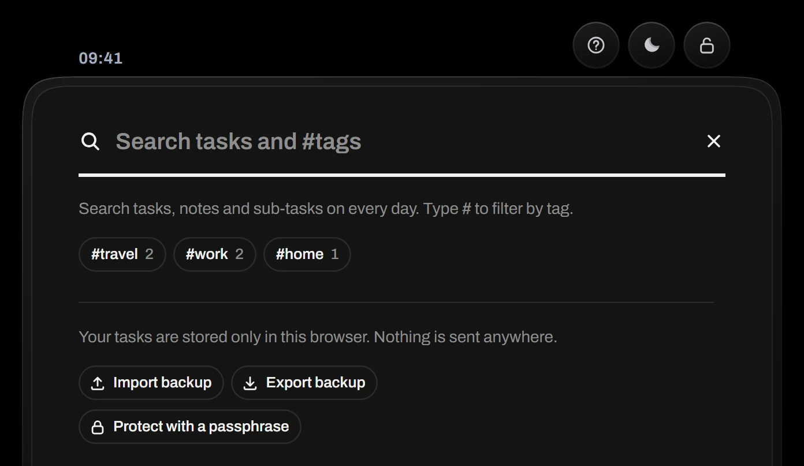
For the legal details, read the privacy policy.
Sync with your cloud
To have the same tasks on your phone and your computer, One Day can keep them in your own Google Drive, Dropbox or OneDrive, one at a time. There is still no account and no server: each device talks to your cloud directly, and your tasks are encrypted with a passphrase before they leave it. Your cloud sees one file and when it changes, never a task, and nothing reaches One Day.
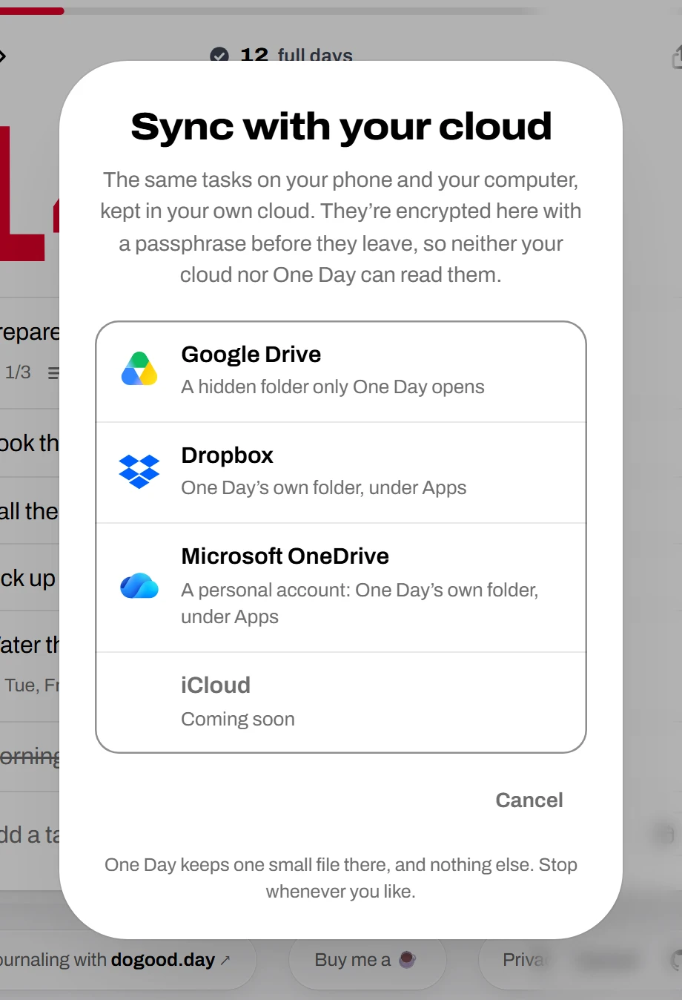
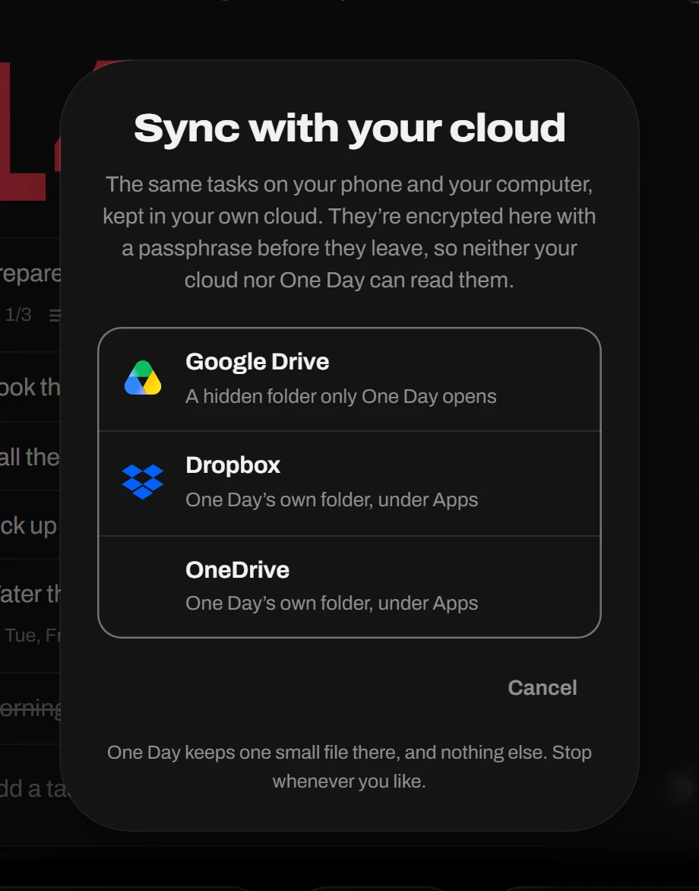
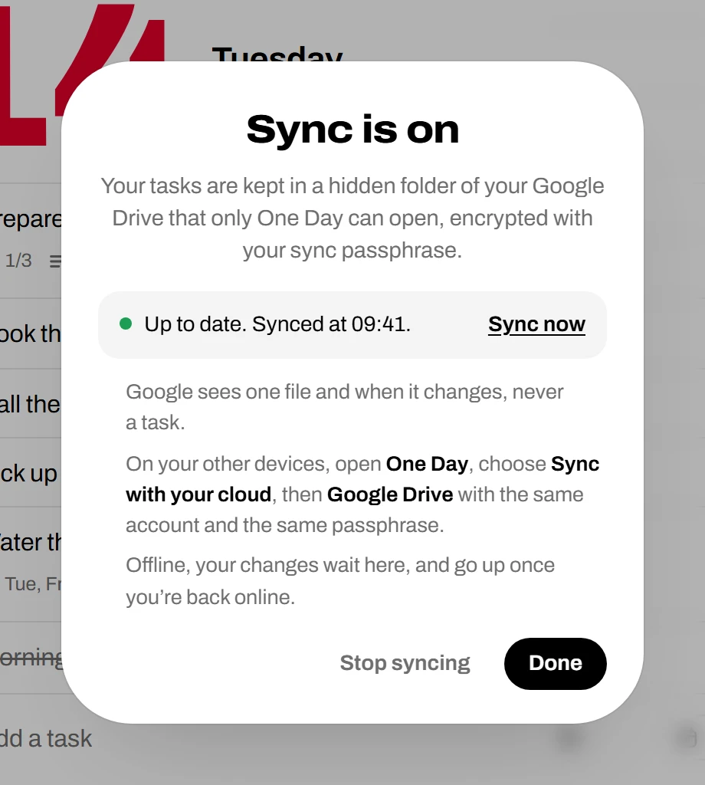
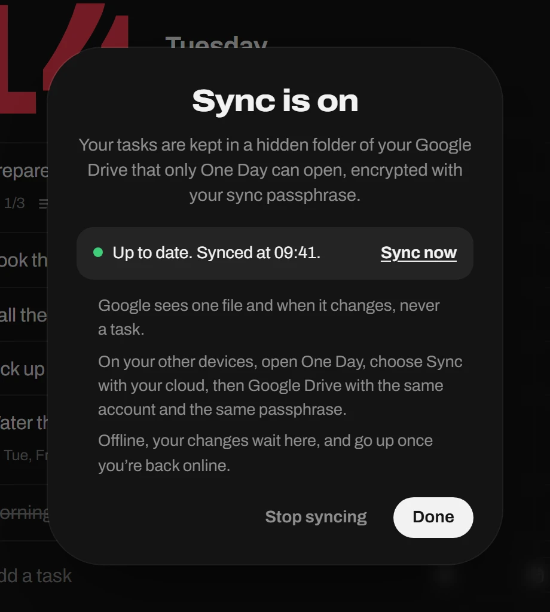
- Choose Sync with your cloud: the cloud beside the lock, above the card on a large screen or in the card’s bar in a narrower window; in More on a phone.
- Pick your cloud and sign in on its own page. One Day asks for its own folder there, and nothing else: a hidden folder in Google Drive, One Day’s folder under Apps in Dropbox and OneDrive.
- Choose a sync passphrase, 12 characters or more. On each of your other devices, do the same with the same account, and type the same passphrase.
From then on, each change goes up a moment later, and what you changed elsewhere comes in when One Day opens, when you come back to it, and every couple of minutes while it’s open. The cloud beside the lock says how it’s going; click it to sync now, or to stop.
When two devices change the same day
Nothing you write is lost. One Day merges task by task:
- Changes to different tasks, or to different parts of one task (its words on one device, its tick on the other), all stay.
- If both devices change the same thing, the device whose day changed last wins.
- A task deleted on one device and changed on the other stays. One deleted and left alone elsewhere goes everywhere.
- A repeating task shown on both devices still comes once a day.
Offline, and signing in again
Offline, One Day works as always: your changes are kept on the device, and go up once you’re back online. Each cloud decides how long One Day stays signed in: Dropbox until you stop syncing, OneDrive a day, Google Drive an hour. After that, One Day asks you to sign in again, in a click, and your changes wait meanwhile.
With the lock
They work together. With the lock on, sync’s key and your sign-in are encrypted with your tasks, so a locked One Day syncs nothing until you open it. The two passphrases can be the same or not: the lock’s opens One Day on this device, the sync passphrase opens your tasks in your cloud.
Good to know:
- The copy in your cloud is an encrypted backup too: Import backup opens it with the sync passphrase.
- Stop syncing, where you turned sync on, keeps your tasks on this device, and in your cloud for your other devices. Tick Also erase One Day’s copy to take them off your cloud too, once your other devices have stopped: one still syncing would put the copy back.
- Deleting One Day’s folder in your cloud only deletes the copy: your tasks stay on your devices.
- Sync is free: One Day keeps one small file in your cloud, counted in its storage.
- Google Drive is a trademark of Google LLC, Dropbox a trademark of Dropbox, Inc., and Microsoft and OneDrive trademarks of the Microsoft group of companies. One Day is not affiliated with or endorsed by any of them.
Backups
Export backup downloads a file with all your days, repeats and tag colours, named like
one-day-backup-2026-04-14.json. You’ll find it in search before you type, or in More on a phone.
Keep the file somewhere safe: your documents, a cloud drive, an email to yourself.
Import backup reads one back. It only adds what’s missing and never overwrites the tasks you have, so importing the same file twice changes nothing. One undo takes an import back.
Moving to a new phone or computer
With sync on, connect the new one to the same cloud and your tasks come along. Without it, you bring them yourself, in one of two ways:
- Everything: on the old device, Export backup. Move the file to the new one (AirDrop, email, a cloud drive), open One Day there and choose Import backup.
- Just a day’s open tasks: on the old device, Send this day, then open the link on the new one, for each day you need. The link carries the tasks with their notes and sub-tasks, but not their repeats.
With the lock on, backups are encrypted with your passphrase: you’ll need it to import them.
From another app
Import backup also reads what other to-do apps export: Todoist, TickTick, Google Tasks, Evernote and
todo.txt, and tables saved as CSV (Coda, an Any.do board, a Notion database, a spreadsheet). Pick the file, or
the .zip it came in. Before anything is added, One Day shows how many tasks will come and on
which days; Add all brings them in, and one undo takes them all back. The file is read here, in your
browser: nothing is sent anywhere.
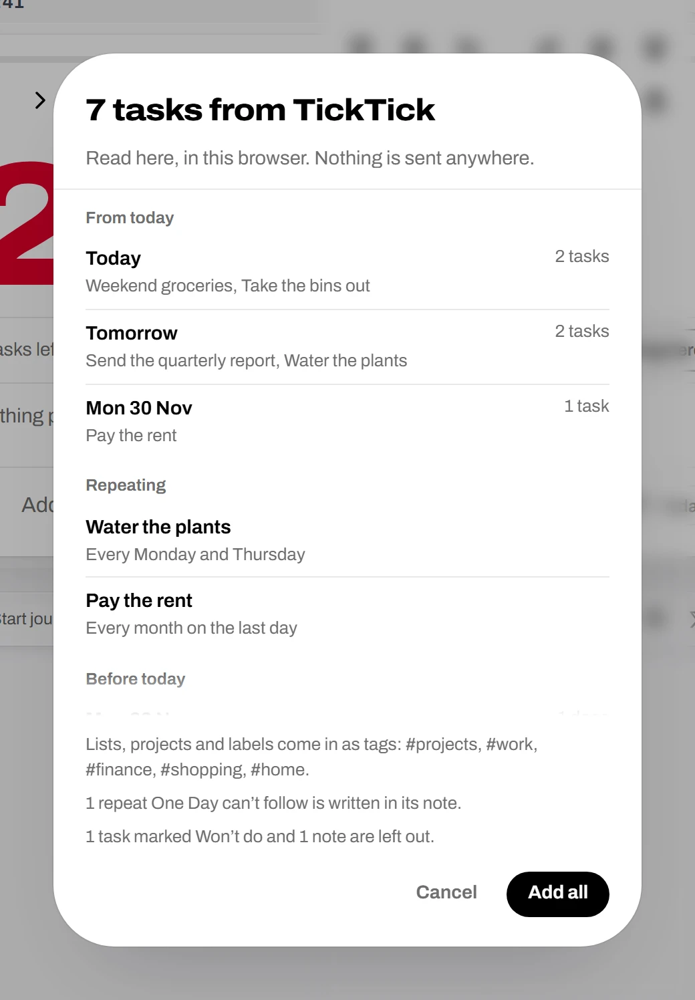
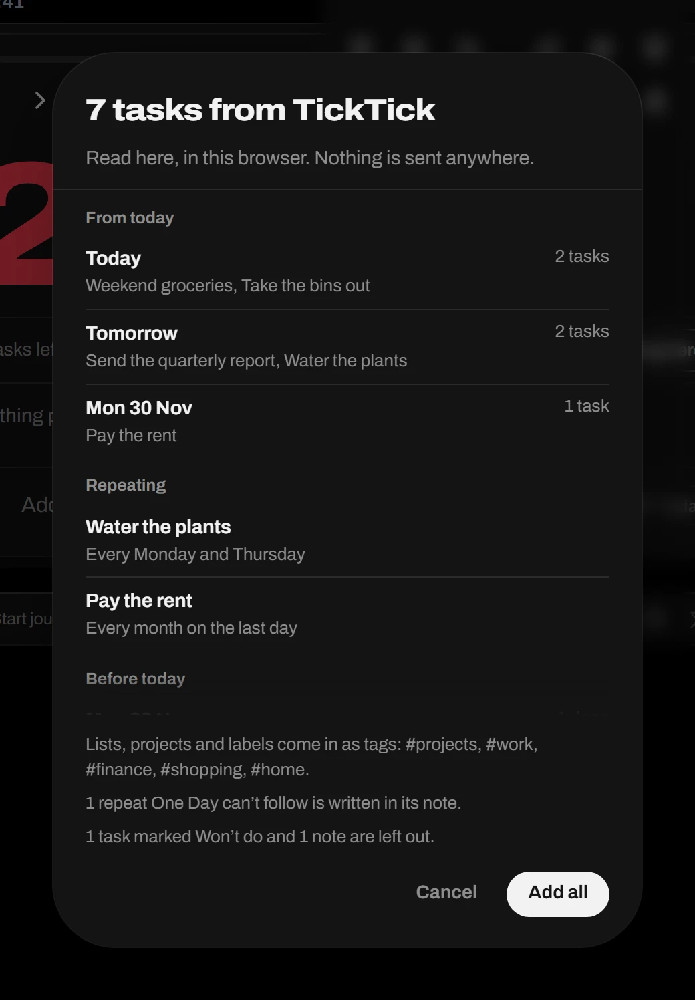
- Your history comes too: a done task goes on the day it was done, where the export has it. (Todoist never exports done tasks.)
- Lists, projects and labels become #tags, and notes and sub-tasks come along.
- Repeats become One Day repeats when they fit. Any other comes in once, its repeat written in its note.
- Left behind: priorities, times of day, reminders and durations. One Day plans days, not hours.
Where each app keeps its export, and exactly what comes over, is on the project’s page.
Things, Apple Reminders and Microsoft To Do have no export One Day can read. Select the tasks there, copy them, and paste them where you add a task: each line becomes a task.
The lock
If someone else might open your computer or phone, a passphrase keeps your tasks to yourself. Choose Protect with a passphrase: the lock at the top right on a large screen, in the ⋮ menu of a narrower window, or in More on a phone. One Day then encrypts your tasks in the browser.
From then on, it asks for the passphrase when it opens, after five minutes away, and as soon as you press L or click the lock. Where your device can, your fingerprint, face or device PIN opens it too; setting that up asks for the passphrase once.
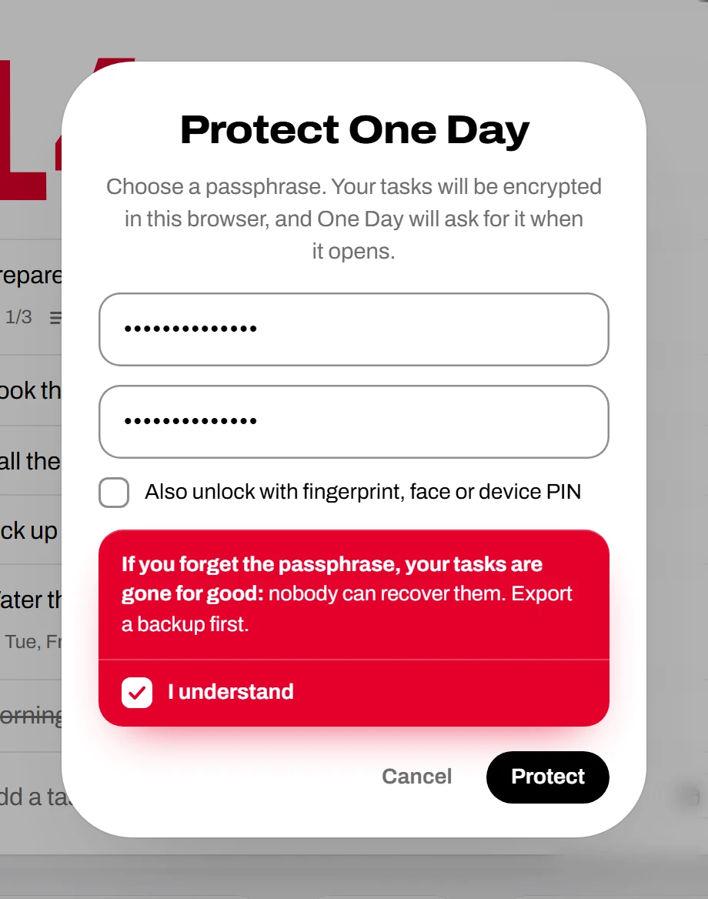
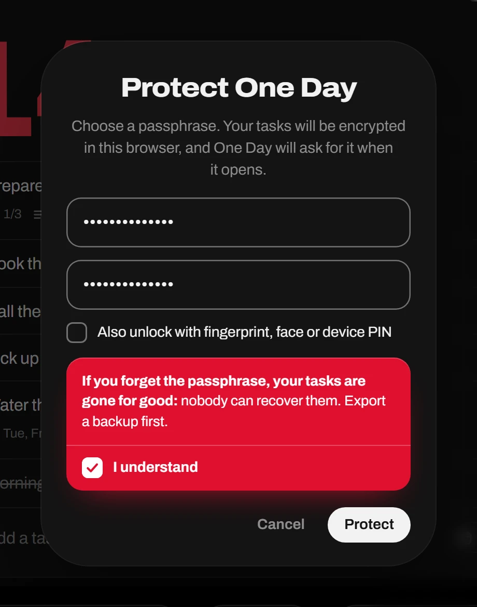
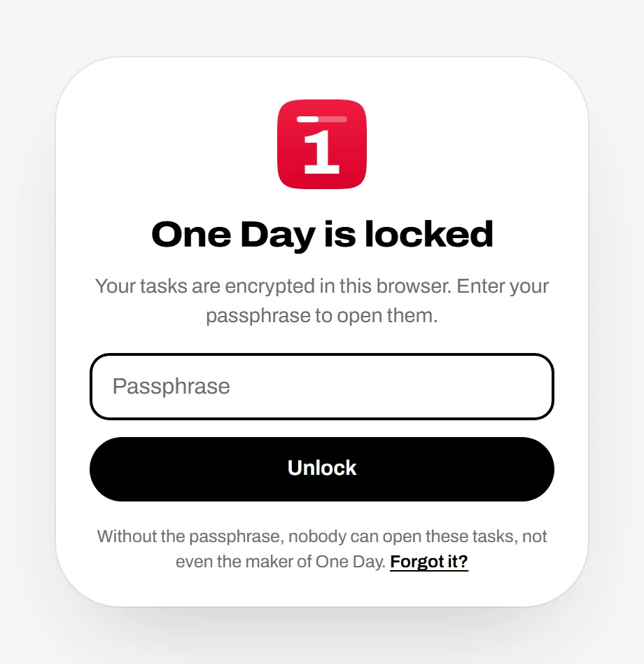
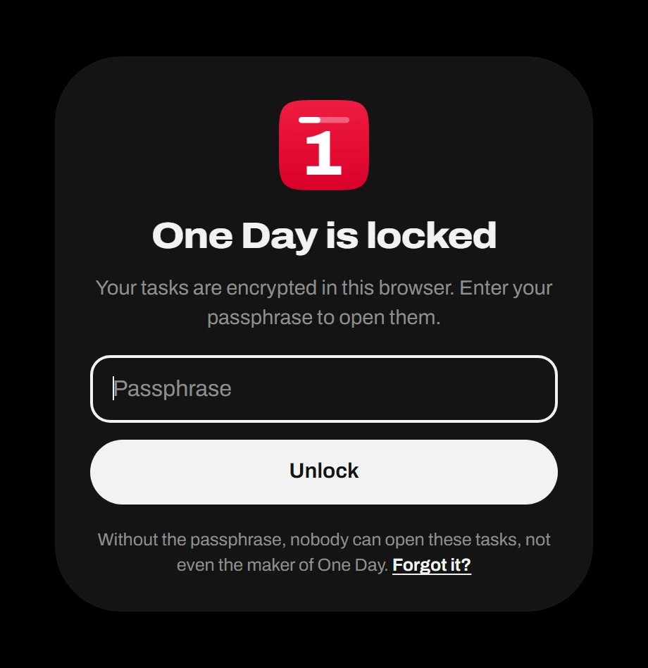
Good to know:
- Backups made while the lock is on are encrypted too, with the same passphrase.
- Changing the passphrase changes the key: the old passphrase opens nothing you write afterwards. Backups made before keep the passphrase they were made with.
- If your browser saves the passphrase, it can fill it in for anyone using that browser.
- Tasks saved before you turned the lock on can stay in the browser’s own files for a while, until it clears them.
- The lock protects what is on this device. A link you send carries its tasks in the clear.
- Turn off protection, where you turned it on, stores your tasks without encryption again.
Help
Answers to common questions, and where to ask the others.
Questions
Where are my tasks stored?
In your browser, on this device, for this site only. With sync on, also in your own Google Drive, Dropbox or OneDrive, encrypted. There is never a copy on a server of One Day’s.
Can I use One Day on my phone and my computer?
Yes. Turn on sync on both, with the same cloud account and the same passphrase, and they keep one list. Without it, each keeps its own: see the next question.
How do I get my tasks onto another device?
With sync, connect it to the same cloud. Otherwise, for a day’s open tasks, Send this day and open the link on the other device: send it by message, by email or in a note to yourself. For everything, export a backup, move the file and import it there. Importing adds what’s missing and keeps what’s there, so you can do it again later. See Moving to a new phone or computer.
Can I bring my tasks from Todoist or another app?
Yes: from Todoist, TickTick, Google Tasks, Evernote, todo.txt or a table saved as CSV. Export them there, then choose Import backup here. See From another app.
Can my AI assistant add tasks?
Yes. Claude, ChatGPT or another assistant writes a link, and opening it adds the tasks once you say so. See With an AI assistant.
The installed app shows an old version
Close it completely and open it again, twice. The first time, it opens the version it has and fetches the new one in the background; the second time, it opens the new one. On a phone, close it from the app switcher: going back to the home screen isn’t enough.
I use Safari. Can my tasks disappear?
They can, if One Day isn’t installed: Safari may erase a site’s data when you haven’t opened it for seven days of browsing, tasks included. Installed apps are kept (Add to Home Screen on an iPhone or iPad, Add to Dock on a Mac). Install it, and export a backup now and then.
My tasks are gone. What happened?
Usually one of these: a different browser or browser profile; a private window, whose data goes when it closes; the site’s data was cleared, by you or by a cleaning app; or Safari’s seven-day rule. One Day can’t bring them back, because there is no copy anywhere else, but Import backup restores your last backup.
I forgot my passphrase
It can’t be recovered: see The lock. Forgot it? on the lock screen erases the tasks so you can start again. Then you can import a backup made before the lock was on, or one whose passphrase you know.
Does it work offline?
Yes, once you’ve opened it online one time, even in a tab. Installed, it opens like any other app.
Does the timer ring when One Day is closed?
No: the chime only plays while One Day is open. The timer keeps time, though: open One Day again and it shows what’s left, or that time’s up.
Why don’t I see Keep on top?
It needs Chrome or Edge, version 116 or later, on a computer. Safari, Firefox and phones don’t offer it, so One Day leaves the button out there.
How do I erase everything?
Clear this site’s data in your browser’s settings. With the lock on, Forgot it? on the lock screen erases the tasks too. With sync on, first Stop syncing with Also erase One Day’s copy ticked, on every device: otherwise the next one to sync puts your tasks back.
Is there an account, a subscription or ads?
None of them. One Day is free and open source, under the MIT licence, and its code is on GitHub. If it helps your days, you can buy me a croissant.
Something unclear?
If something here is unclear or missing, tell me. These are plain links: nothing is sent until you click one, and an email leaves only when you send it.